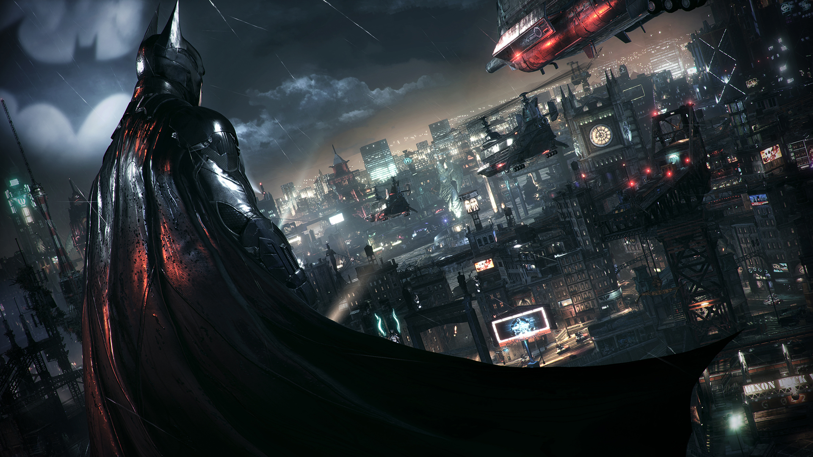

Secondo quanto riportato dal sito UP2Play, c'e' la concreta possibilita' che il nuovo videogioco di Batman da parte di Warner Bros, che secondo alcune voci si chiamerebbe Batman Arkham: Insurgency, venga annunciato nel corso dell'E3 2017.
In effetti, non e' che si tratti proprio di una cosa fuori dal mondo: considerando che un nuovo Batman e' molto probabilmente in sviluppo, il momento ideale per la sua presentazione a questo punto sarebbe proprio l'E3 2017, dunque prendiamo questa voce di corridoio, assolutamente non confermabile al momento, come piuttosto condivisibile.
Il tutto tra l'altro parte da una di quelle classiche liste che compaiono sempre a bizzeffe all'avvicinarsi delle fiere estive, e come da tradizione anche in questo caso non poteva mancare, riportando peraltro anche la presentazione di un misterioso "Assassin's Creed 2017" e di Beyond Good and Evil 2 da parte di Ubisoft, sempre all'E3 2017.
